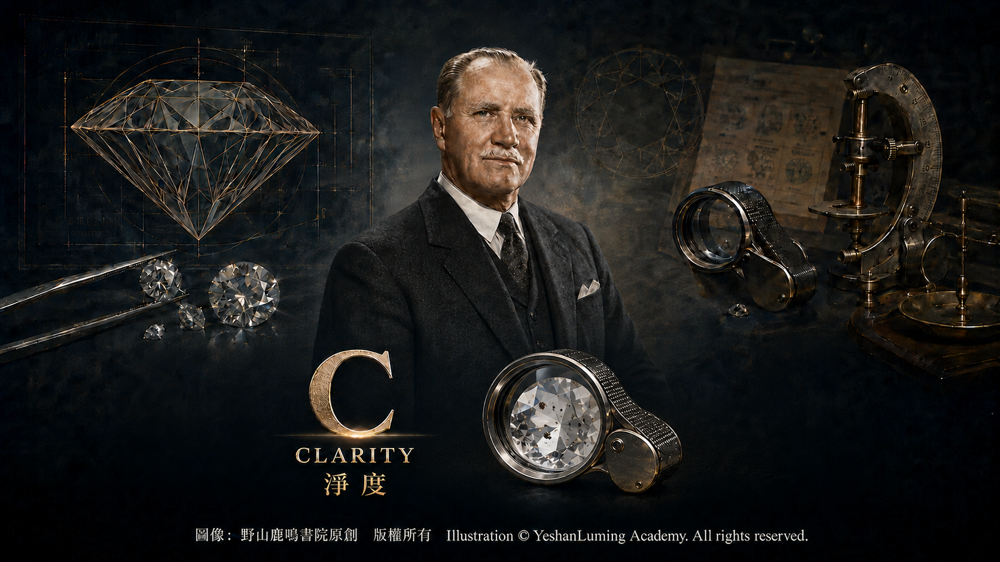
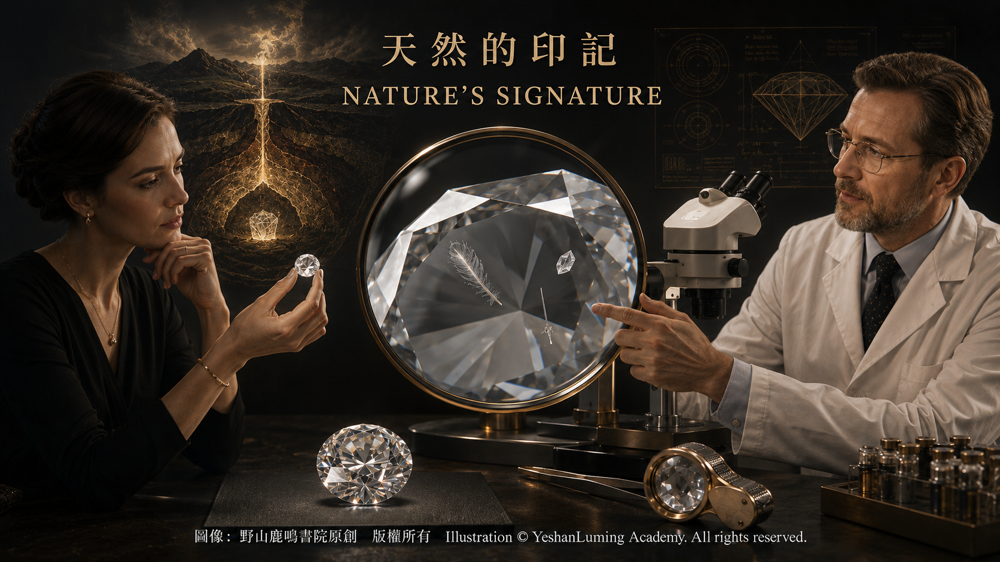

淨度的世界·內含物是缺陷還是印記The World of Clarity: Are Inclusions Flaws or Imprints?
The World of Gemstones · Diamond SeriesThe World of Clarity: Are Inclusions Flaws or Imprints?
The World of Gemstones · Diamond Series淨度的世界·內含物是缺陷還是印記
寶石世界·鑽石篇
寶石世界·鑽石篇（117）The World of Gemstones · Diamond Series (117)
當一顆鑽石被放在光下仔細觀察時，你可能會發現，它並不像想像中那樣「完美無瑕」。在放大觀察之下，許多鑽石的內部會出現各種細微的特徵：有的呈點狀或線狀，有的像雲霧，有的則像羽毛一般延伸。
這些位於鑽石內部，或者從表面延伸至內部的特徵，被稱為「內含物」。此外，鑽石表面還可能存在一些沒有延伸至內部的特徵，被稱為「表面瑕疵」。寶石學所說的淨度，就是對這兩類淨度特徵的相對多少及明顯程度所作的評價。
在直覺上，人們很容易把它們視為缺陷。但如果從寶石學和地質學的角度看，許多內含物其實是鑽石形成與生長過程留下的自然記錄。它們可能是晶體生長時包裹進去的微小礦物，也可能是晶體生長不規則、受到應力或發生結構變化所形成的痕跡。
換句話說，許多天然鑽石的內部，都以不同形式保存著形成時的環境信息。對寶石學家和地質學家而言，某些內含物甚至像來自地球深部的時間膠囊。因此，淨度不僅是一項品質指標，也能讓人看到鑽石形成漫長歷史中留下的痕跡。
當然，從品質評價的角度看，內含物和表面瑕疵仍然會影響鑽石的外觀、稀有性與價值。當內含物較大、數量較多、反差明顯或集中在重要位置時，可能降低鑽石的透明度和亮度；某些延伸至表面的裂隙或缺口，還可能影響鑽石的耐久性。因此，在4C體系中，淨度是評價鑽石品質與價格的重要因素之一。
按照GIA的標準，天然鑽石的淨度分為六個類別、十一個具體等級，從最高的FL（Flawless，無瑕）和IF（Internally Flawless，內部無瑕），到VVS1、VVS2、VS1、VS2、SI1、SI2，以及I1、I2和I3。
當一顆鑽石被放在光下仔細觀察時，你可能會發現，它並不像想像中那樣「完美無瑕」。在放大觀察之下，許多鑽石的內部會出現各種細微的特徵：有的呈點狀或線狀，有的像雲霧，有的則像羽毛一般延伸。
這些位於鑽石內部，或者從表面延伸至內部的特徵，被稱為「內含物」。此外，鑽石表面還可能存在一些沒有延伸至內部的特徵，被稱為「表面瑕疵」。寶石學所說的淨度，就是對這兩類淨度特徵的相對多少及明顯程度所作的評價。
在直覺上，人們很容易把它們視為缺陷。但如果從寶石學和地質學的角度看，許多內含物其實是鑽石形成與生長過程留下的自然記錄。它們可能是晶體生長時包裹進去的微小礦物，也可能是晶體生長不規則、受到應力或發生結構變化所形成的痕跡。
換句話說，許多天然鑽石的內部，都以不同形式保存著形成時的環境信息。對寶石學家和地質學家而言，某些內含物甚至像來自地球深部的時間膠囊。因此，淨度不僅是一項品質指標，也能讓人看到鑽石形成漫長歷史中留下的痕跡。
當然，從品質評價的角度看，內含物和表面瑕疵仍然會影響鑽石的外觀、稀有性與價值。當內含物較大、數量較多、反差明顯或集中在重要位置時，可能降低鑽石的透明度和亮度；某些延伸至表面的裂隙或缺口，還可能影響鑽石的耐久性。因此，在4C體系中，淨度是評價鑽石品質與價格的重要因素之一。
按照GIA的標準，天然鑽石的淨度分為六個類別、十一個具體等級，從最高的FL（Flawless，無瑕）和IF（Internally Flawless，內部無瑕），到VVS1、VVS2、VS1、VS2、SI1、SI2，以及I1、I2和I3。
FL表示在10倍放大條件下看不到內含物與表面瑕疵；IF表示看不到內含物，但可能存在極輕微的表面瑕疵。VVS、VS和SI依次表示內含物在10倍放大下由極難看到，逐漸變得較容易看到；I級則表示內含物在10倍放大下十分明顯，有些還可能被肉眼看到，并可能影响透明度、亮度或耐久性。
這些等級並不是憑主觀印象隨意判斷，而是在受控照明、規定觀察角度與標準放大條件下評定。評級人員可以借助珠寶放大鏡和顯微鏡全面檢查鑽石，但最終的淨度等級，是以10倍放大條件下所能觀察到的淨度特徵為標準。

Click to enlarge
從寶石學的角度看，淨度評價主要考慮五項因素：淨度特徵的大小、數量、位置、明顯度和性質。這些因素需要綜合判斷，任何一項都不能完全獨立地決定最終等級。
例如，在其他因素相近的情況下，位於臺面中央、正面容易觀察到的內含物，通常比靠近腰圍、較不容易被看到的同類特徵，對淨度等級產生更大的影響。有些內含物雖然不大，但與鑽石本身反差強烈，因而更加醒目；有些羽狀裂紋或缺口，則可能因其性質和位置而需要考慮對耐久性的影響。
從地質學的角度看，某些內含物的存在，是鑽石形成環境的重要證據。鑽石在地球深部的高溫高壓環境中形成，晶體在生長過程中可能包裹周圍的微小礦物，也可能留下生長紋理和結構特徵。這些信息可以幫助科學家研究鑽石的形成條件，以及地球深部的物質組成和演化歷史。
然而，能夠在10倍放大條件下看不到內含物的鑽石十分稀少；如果連表面瑕疵也無法看到，達到FL級，就更加罕見。這也解釋了為什麼FL與IF級鑽石往往具有較高的稀有性和市場價值。
不過，FL和IF並不表示鑽石在任何放大倍率或科學儀器下絕對不存在任何微觀特徵。它們代表的是在GIA規定的10倍放大與標準觀察條件下所得到的淨度評價。
在實際佩戴中，許多影響淨度等級的細微內含物並不能直接用肉眼看到。VS級鑽石的內含物通常難以用肉眼觀察，許多SI1級鑽石在正常觀察條件下也可能呈現肉眼潔淨的外觀；但SI2級的個體差異較大，有些內含物可能被肉眼看到。因此，不能只依靠等級名稱，還需要結合鑽石大小、琢形、內含物的位置與性質逐顆觀察。
這也反映了一個重要觀點：在實際選購中，淨度並不只是抽象地追求「越高越好」，還要判斷內含物是否影響肉眼觀感、透明度、亮度與耐久性。在其他條件相近時，選擇肉眼難以看到內含物、又不影響耐久性的鑽石，往往能在外觀和價格之間取得更好的平衡。
同時，淨度特徵也使許多鑽石具有可以辨認的個體特徵。不同鑽石的內含物與表面瑕疵，很少會以完全相同的形態出現在完全相同的位置，因此這些內含物和表面瑕疵常被比喻為鑽石的「指紋」。
在附有淨度特徵圖的鑽石分級報告中，主要內含物與表面瑕疵的位置和種類會以不同符號標示。這些記錄可以配合鑽石的重量、尺寸、比例以及雷射刻字等資料，幫助核對該顆鑽石的身份。
這一點，使內含物不再只是抽象的「缺陷」，也成為鑽石可以被觀察和辨認的特徵。
在寶石學研究中，某些具有罕見礦物包裹體或特殊生長結構的鑽石，雖然未必具有最高的商業淨度，卻可能因其地質研究價值、來源信息或特殊外觀而受到科學界與收藏者關注。關於這些具有獨特內部結構的鑽石，我們在後面的名鑽篇中，也會進一步介紹。
回到本質，淨度的意義，其實取決於我們從哪一個角度看待這些特徵。從品質分級與市場價值來看，內含物越少、越不明顯，鑽石通常越稀有；但從自然形成和地質研究的角度看，它們又是鑽石從地球深處帶來的歷史印記。
也許可以這樣理解：在鑽石的世界裡，最高的淨度有其稀有和珍貴之處，而自然留下的痕跡也有其獨特意義。真正適合一個人的鑽石，未必需要毫無痕跡，而是在可以接受的淨度範圍內，仍然能夠充分展現光的美。
（未完待續）
When a diamond is placed under the light and examined carefully, you may discover that it is not as “flawless” as you had imagined. Under magnification, the interiors of many diamonds reveal a variety of minute features: some appear as points or lines, some resemble clouds, and others extend like feathers.
Features located within a diamond, or extending from its surface into its interior, are called “inclusions.” A diamond may also possess features confined to its surface that do not extend into the interior; these are known as “blemishes.” In gemology, clarity is the evaluation of the relative abundance and visibility of these two kinds of clarity characteristics.
At first glance, it is easy to regard them as defects. Yet from gemological and geological perspectives, many inclusions are actually natural records left by the formation and growth of a diamond. They may be tiny minerals enclosed as the crystal grew, or traces created by irregular crystal growth, stress, or structural changes.
In other words, many natural diamonds preserve information about their formative environments in various ways. To gemologists and geologists, certain inclusions are even like time capsules from deep within the Earth. Clarity is therefore not merely an indicator of quality; it also allows us to glimpse the traces left by a diamond’s immensely long history.
Of course, from the standpoint of quality assessment, inclusions and blemishes can still affect a diamond’s appearance, rarity, and value. When inclusions are large, numerous, highly contrasting, or concentrated in important locations, they may reduce the diamond’s transparency and brightness. Certain fractures or cavities that reach the surface may also affect its durability. For this reason, clarity is one of the important factors used to evaluate diamond quality and price within the 4Cs system.
Under the GIA system, the clarity of natural diamonds is divided into six categories and eleven specific grades, ranging from the highest grades of FL (Flawless) and IF (Internally Flawless), through VVS1, VVS2, VS1, VS2, SI1, and SI2, to I1, I2, and I3.
When a diamond is placed under the light and examined carefully, you may discover that it is not as “flawless” as you had imagined. Under magnification, the interiors of many diamonds reveal a variety of minute features: some appear as points or lines, some resemble clouds, and others extend like feathers.
Features located within a diamond, or extending from its surface into its interior, are called “inclusions.” A diamond may also possess features confined to its surface that do not extend into the interior; these are known as “blemishes.” In gemology, clarity is the evaluation of the relative abundance and visibility of these two kinds of clarity characteristics.
At first glance, it is easy to regard them as defects. Yet from gemological and geological perspectives, many inclusions are actually natural records left by the formation and growth of a diamond. They may be tiny minerals enclosed as the crystal grew, or traces created by irregular crystal growth, stress, or structural changes.
In other words, many natural diamonds preserve information about their formative environments in various ways. To gemologists and geologists, certain inclusions are even like time capsules from deep within the Earth. Clarity is therefore not merely an indicator of quality; it also allows us to glimpse the traces left by a diamond’s immensely long history.
Of course, from the standpoint of quality assessment, inclusions and blemishes can still affect a diamond’s appearance, rarity, and value. When inclusions are large, numerous, highly contrasting, or concentrated in important locations, they may reduce the diamond’s transparency and brightness. Certain fractures or cavities that reach the surface may also affect its durability. For this reason, clarity is one of the important factors used to evaluate diamond quality and price within the 4Cs system.
Under the GIA system, the clarity of natural diamonds is divided into six categories and eleven specific grades, ranging from the highest grades of FL (Flawless) and IF (Internally Flawless), through VVS1, VVS2, VS1, VS2, SI1, and SI2, to I1, I2, and I3.
FL means that no inclusions or blemishes are visible under 10× magnification. IF means that no inclusions are visible, although extremely minor blemishes may be present. VVS, VS, and SI indicate, in succession, that inclusions range from extremely difficult to see to progressively easier to see under 10× magnification. In I-grade diamonds, inclusions are obvious under 10× magnification; some may also be visible to the unaided eye and may affect transparency, brightness, or durability.
These grades are not assigned casually according to subjective impressions. They are determined under controlled lighting, prescribed viewing angles, and standardized magnification. Graders may use both a jeweler’s loupe and a microscope to examine a diamond thoroughly, but the final clarity grade is based on the clarity characteristics visible under 10× magnification.
Click to enlarge
From a gemological perspective, clarity grading primarily considers five factors: the size, number, position, relief, and nature of the clarity characteristics. These factors must be evaluated together; no single one of them can independently determine the final grade.
For example, when other factors are comparable, an inclusion located beneath the center of the table and readily visible face-up will generally have a greater effect on the clarity grade than a similar feature situated near the girdle and less easily seen. Some inclusions may be small but stand out because they contrast strongly with the diamond itself. Certain feather-like fractures or cavities, meanwhile, may require consideration of their possible effect on durability because of their nature and location.
From a geological perspective, the presence of certain inclusions provides important evidence of the environment in which a diamond formed. Diamonds originate under conditions of high temperature and pressure deep within the Earth. As their crystals grow, they may enclose tiny surrounding minerals or preserve growth patterns and structural features. This information can help scientists investigate the conditions under which diamonds form, as well as the composition and evolutionary history of materials deep within the Earth.
Diamonds with no inclusions visible under 10× magnification are exceedingly rare. Those in which no blemishes can be seen either, thereby attaining the FL grade, are rarer still. This helps explain why FL- and IF-clarity diamonds often possess greater rarity and market value.
However, FL and IF do not mean that a diamond is absolutely devoid of all microscopic features at every level of magnification or under every scientific instrument. These grades represent clarity assessments made under the 10× magnification and standard viewing conditions prescribed by GIA.
In actual wear, many of the minute inclusions that affect a clarity grade cannot be seen directly with the unaided eye. Inclusions in VS-grade diamonds are usually difficult to see without magnification, and many SI1-grade diamonds may also appear eye-clean under normal viewing conditions. SI2-grade diamonds, however, vary considerably, and some may contain inclusions visible to the unaided eye. One should therefore not rely solely upon the name of the grade, but should examine each diamond individually in relation to its size, cutting style, and the position and nature of its inclusions.
This reflects an important principle: when purchasing a diamond, clarity is not simply an abstract pursuit of “the higher, the better.” One must also consider whether the inclusions affect its appearance to the unaided eye, transparency, brightness, or durability. When other factors are comparable, selecting a diamond whose inclusions are difficult to see with the unaided eye and do not compromise durability can often provide a better balance between appearance and price.
At the same time, clarity characteristics give many diamonds individually recognizable features. The inclusions and blemishes in different diamonds rarely occur in precisely the same forms and precisely the same locations. For this reason, these inclusions and blemishes are often compared to a diamond’s “fingerprint.”
In diamond grading reports that include a clarity characteristics plot, the positions and types of the principal inclusions and blemishes are marked with different symbols. These records, together with information such as the diamond’s weight, measurements, proportions, and laser inscription, can help verify the identity of the individual diamond.
In this sense, inclusions cease to be merely abstract “defects” and become observable, identifiable features of the diamond.
In gemological research, certain diamonds containing rare mineral inclusions or unusual growth structures may not possess the highest commercial clarity, yet they can attract the attention of scientists and collectors because of their geological research value, provenance information, or distinctive appearance. We will explore some of these diamonds with unique internal structures in greater depth later in the Famous Diamonds series.
At its heart, the meaning of clarity depends upon the perspective from which we view these characteristics. In terms of quality grading and market value, diamonds with fewer and less visible inclusions are generally rarer. From the perspectives of natural formation and geological research, however, these features are historical imprints carried by diamonds from deep within the Earth.
Perhaps we can understand it this way: In the world of diamonds, the highest clarity possesses its own rarity and preciousness, while the traces left by nature have their own distinctive significance. The diamond best suited to an individual need not be entirely without traces; within an acceptable clarity range, it can still reveal the full beauty of light.
(To be continued)